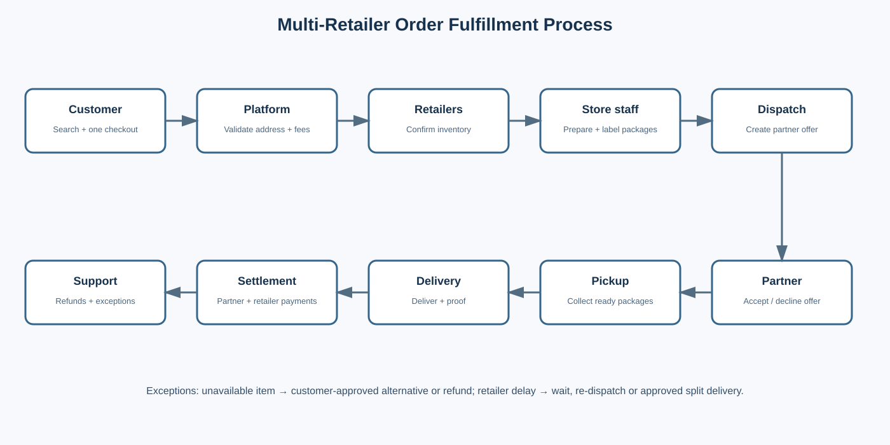
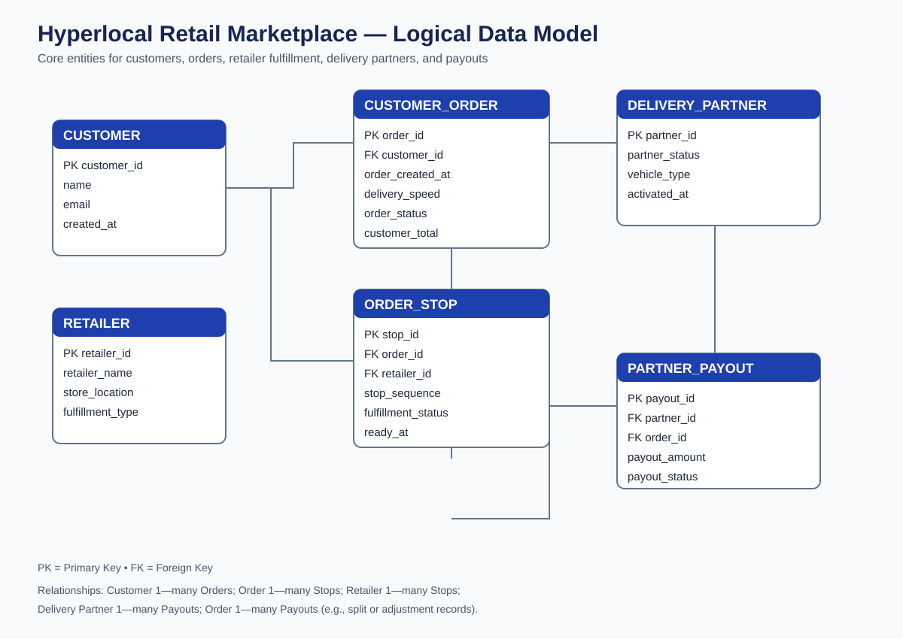

The business opportunity
Local retailers offer products customers want, but shopping across multiple stores can be fragmented and inconvenient. This project explores a unified marketplace where customers can discover products from nearby stores, place multi-store orders, and receive local delivery.
The proposed pilot focuses on the UTC and La Jolla area of San Diego. The business concept, operating model, and financial assumptions are exploratory—not a launched business or confirmed retailer partnership.
What I worked on
Business Requirements
Defined business objectives, scope, requirements, user stories, and acceptance criteria.
Process Design
Mapped the customer order journey, retailer fulfillment, delivery handoffs, and exceptions.
Data & SQL
Designed a relational data model and developed SQL queries to examine order and delivery performance.
Financial Analysis
Built illustrative pricing, cost, and contribution scenarios to explore unit economics.
Dashboard Planning
Prepared KPI datasets and an interactive dashboard to explore operational performance.
Product Prototype
Created a customer-facing prototype to demonstrate how the marketplace experience could work.
From business problem to proposed solution
Customer Experience
Browse nearby stores, discover products, combine items from multiple retailers, and track delivery progress.
Retailer Operations
Retailers confirm availability, prepare packages, and mark orders ready for pickup.
Delivery Operations
Delivery partners receive prepared packages and complete assigned pickup and drop-off routes.
Order fulfillment process

Database entity relationship diagram

Explore the work
Project limitations
Transaction and operational datasets are synthetic and created for analysis practice. Pricing, delivery costs, and financial projections are illustrative assumptions. Retailer names are research examples, not confirmed partners. The prototype demonstrates a proposed experience and does not process real orders or payments.